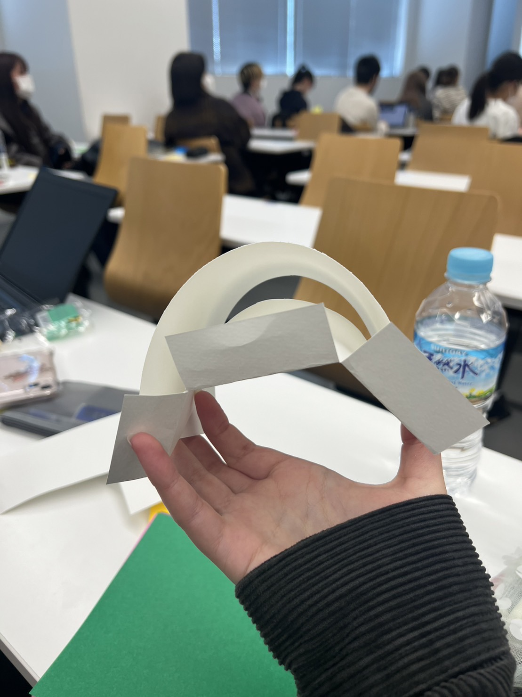
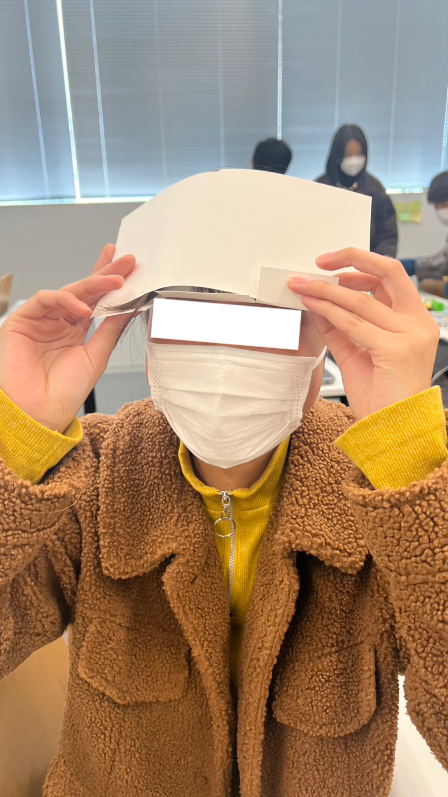
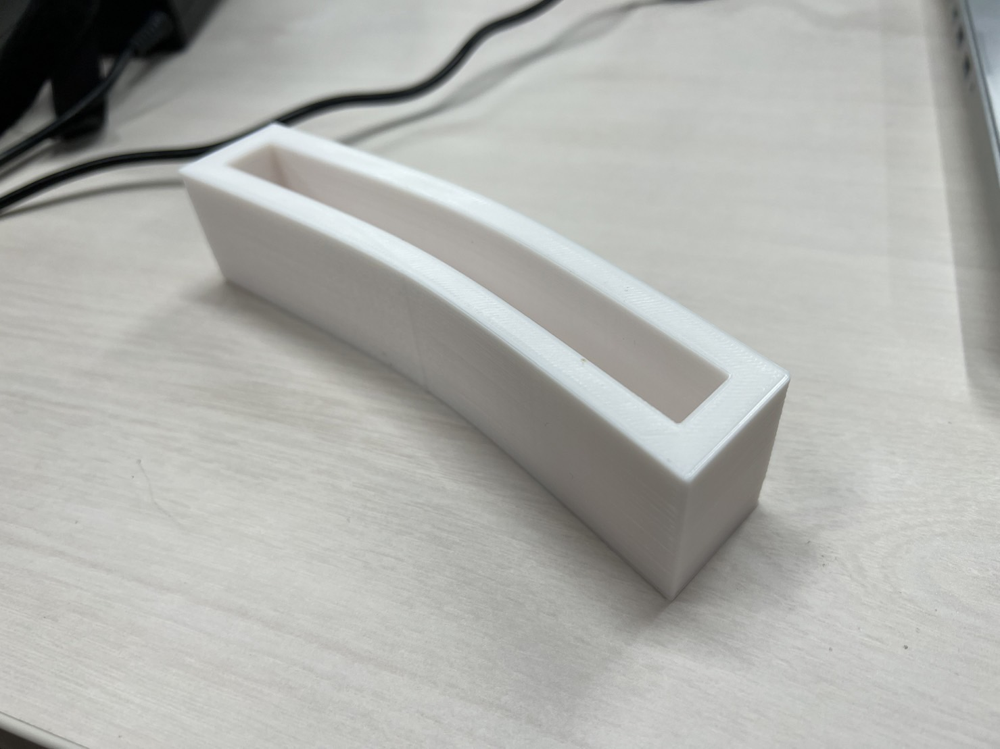
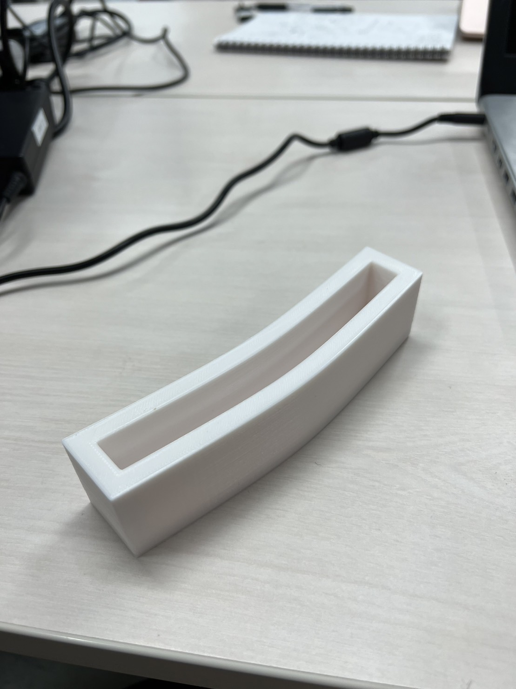

Design for Others
◎Point Of View
『歩きながらスマホで自分の顔(の状態)を確認する人』についての問題解決

どうやったら問題を解決できるのか ↓【班の考え】

↓
前髪の状態を良くすること=自分の見た目に自信を持つことができる
【結果として】歩きながら自分の状態を確認する行動をしなくなるのでは…
このような事から私達の班は『（前髪を湿気や風から守れるもの）前髪カバー』を製作した。
◎プロトタイプ


◎実際に出来上がった作品


製作してみて
前髪を挟む隙間の幅や全体的なサイズ感を考えるのが難しく、完成させることが出来なかった